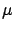
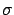
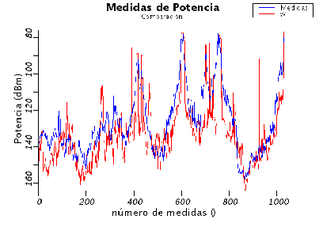
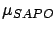
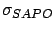
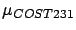
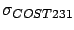
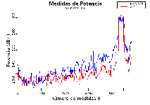
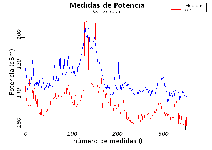
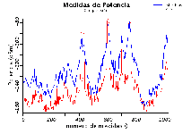

El siguiente modelo a analizar es el de Walfisch-Ikegami. A
diferencia del modelo de Okumura-Hata-Cost231, este modelo sí
incluye correcciones para tomar en cuenta el caso en que la antena
transmisora se encuentre por debajo de las edificaciones
circundantes. De todas formas, en el informe de COST231 se advierte
acerca de la inexactitud del modelo en dicho caso, y si además
se toma en cuenta que fue diseñado para altura de edificaciones
regular, es de esperar que la predicción no sea la más exacta. Los
resultados para una implementación del modelo con los parámetros por
defecto para el caso de centro metropolitano se pueden apreciar en
el cuadro 12.3. Para una mejor evaluación del error
cometido por el modelo, se puede apreciar en la figura
12.5 la comparación entre las medidas y la estimación
para el caso de la ruta 2.
Tabla 12.3:
Media y desviación estándar del error para el modelo de Walfisch-Ikegami
Ruta
 (dB)
 (dB)
route00
-2.16
9.06
route01
-7.48
9.67
route02
-6.02
10.91
Figura 12.5:
Comparación entre las medidas y las estimaciones para la ruta 2 del modelo de Walfisch-Ikegami

Comparando lo obtenido con los resultados del modelo de
Okumura-Hata-COST231, en cuanto a la media se mejora en la primera
ruta, aunque en las dos siguientes es mayor en valor absoluto. Esto
se explica por el hecho que el modelo de Okumura en algunas
secciones de dichos caminos subestima la pérdida y en otros la
sobreestima. Esto hace que el error se compense y resulte menor en
esos caminos, y en el caso del camino 0, donde siempre subestima
(ver figura 12.3), el error medio es mucho mayor. Si se
hace este análisis con el valor absoluto del error en cada punto, la
media en la ruta 0 sigue siendo mejor con el modelo de Walfisch-Ikegami y en
el resto de las rutas son muy similares.
En cuanto a la varianza, el modelo de Walfisch-Ikegami tiene una
performance apenas mejor en el camino 0 y algo peor en el resto.
Esto es debido al hecho que depende no sólo de la distancia, sino
del ancho y orientación de la calle, alto de los edificios y
separación entre los mismos. Estos parámetros se calculan en cada
punto con los algoritmos ya comentados (ver el capítulo
10) y puede que varíen de un punto a otro.
En el informe final de COST231 [16] se presentan
valores de la media y la varianza del error cometido por este modelo
para las tres rutas, así como gráficas comparativas. Sin embargo, el
modelo que se utilizó para las comparaciones difiere en el utilizado
en SAPO pues supone valores constantes para el ancho de
calles, separación entre edificios y altura de los mismos en todos
los puntos (altura de edificios 20 m, ancho de calles 13 m y
separación entre edificios 26 m). Además, no verifica la existencia
de línea de vista y supone que el terreno es de altura constante.
Por ello, para la validación del modelo se incluyó en el software
otra versión del mismo que mantiene los parámetros topográficos
fijos. En la tabla 12.4 se puede apreciar como
la media resultó muy similar en todos los casos, aunque la varianza
resulta un poco mayor en las predicciones de SAPO que las
que aparecen en el informe. Esto es debido a dos factores
principalmente: SAPO toma en cuenta la altura del terreno y
también toma en cuenta la existencia de línea de vista.
Tabla 12.4:
Media y desviación estándar del error para el modelo de Walfisch-Ikegami según SAPO y y el informe de la COST231
Ruta
 (dB)
 (dB)


route00
-8.97
8.99
-10.8
7.7
route01
-15.94
8.02
-15.4
5.9
route02
-15.39
9.54
-16.3
7.3
Además, las gráficas comparativas entre las medidas reales y lo
obtenido según el modelo que aparecen en el informe son muy
similares a las gráficas de la figura 12.6. Los datos
exactos de la predicción en cada punto no están disponibles en el
informe, por lo que un análisis más detallado de las diferencias no
es posible.
Figura 12.6:
Las medidas en las tres rutas y su respectiva estimación
según SAPO para el modelo de Walfisch-Ikegami
simplificado



Otra conclusión que puede surgir del análisis de esta implementación
simplificada del modelo, es que el cálculo de los parámetros
topográficos en todos los puntos, aunque aumenta el tiempo que
consume realizar una predicción, es un factor importante en la
exactitud.
Siguiente:MOPEM Subir:Performance de los modelos Anterior:Erceg-SUIÍndice General
SAPO